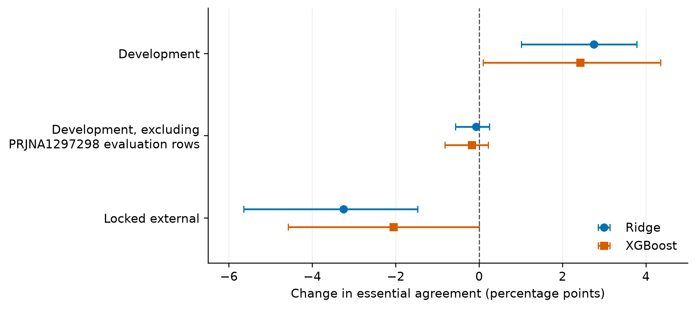
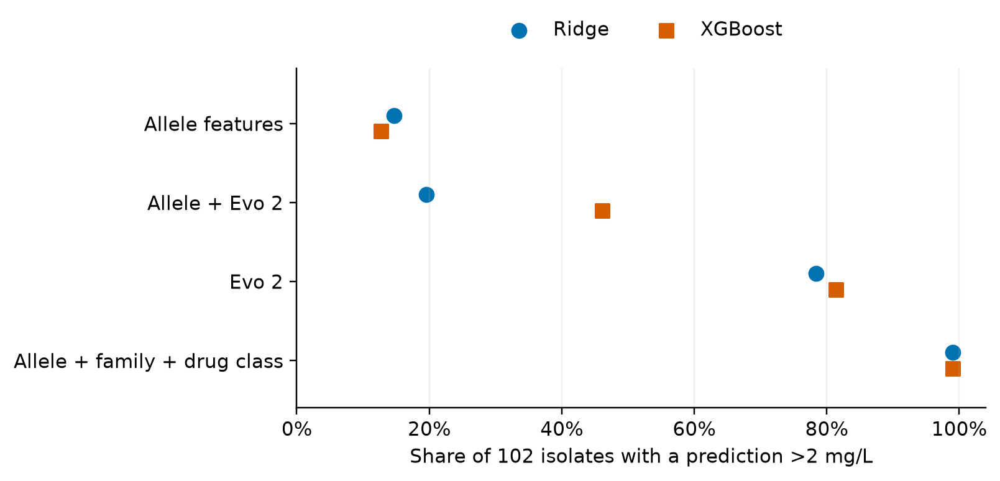

Preprint — 3 October 2026
Genomic foundation models may encode resistance-related sequence variation beyond curated gene catalogues, but their value depends on comparisons with appropriate biological baselines. We evaluated frozen Evo 2 embeddings and AMRFinderPlus features for predicting minimum inhibitory concentrations (MICs) of ceftriaxone, ciprofloxacin, and gentamicin in Escherichia coli. The curated cohort contained 29,619 isolate–antibiotic measurements from 11,520 isolates, including 3,849 human-clinical development isolates and 1,505 external Japanese isolates. We fitted regression models that account for censored MICs, used nested cross-validation grouped by lineage, and froze external predictions before accessing reference MICs. Evo 2 embeddings alone performed worse than allele-level catalogue features for all three drugs and both learners in the locked external evaluation. Adding embeddings did not meet the prespecified criterion for improvement; a gentamicin gain in development was specific to one source and reversed externally. An exploratory external analysis found that curated gene-family and drug-class features placed 99.0% of 102 highly resistant carriers of variants absent or nearly absent from development above a descriptive ceftriaxone threshold, compared with 78.4–81.4% for Evo 2 alone and 12.7–14.7% for allele-level models. In a subsequent experiment withholding four CTX-M alleles from development training, curated features exceeded Evo 2 by 4.6 percentage points with regularized regression (95% lineage-bootstrap interval 2.3–12.1) and 11.1 points with XGBoost (7.4–22.1). These findings favor curated biological grouping over the tested embedding representation. Heterogeneous development assays and reuse of external data for the exploratory analysis limit generalization; the family-model result has not been confirmed in a new external cohort.
Affiliation: Independent researcher.
Correspondence: rushathrajeevav@gmail.com
Whole-genome sequencing offers a route to predicting antimicrobial resistance while identifying the genetic determinants associated with a phenotype. In Escherichia coli, models using gene content and sequence variation have predicted resistance across multiple antibiotics (Moradigaravand et al. 2018). Curated resources such as AMRFinderPlus provide a complementary representation: acquired resistance genes and selected mutations are identified using accumulated experimental knowledge (Feldgarden et al. 2021). A useful new representation should therefore be compared with strong implementations of this existing knowledge.
Genomic foundation models provide an alternative way to represent sequence. Evo 2 learns from a large collection of genomic sequences and supports downstream prediction using its internal representations (Brixi et al. 2026). Such representations could capture relationships between related resistance alleles or local sequence context that a binary gene-name feature misses. Whether this improves antibiotic susceptibility prediction is an empirical question. In particular, a model can appear to improve when it recognizes lineages or collection sources associated with a phenotype. Population structure and biased sampling can confound genomic resistance prediction even in large datasets (Yu et al. 2025).
The comparison also depends on how curated knowledge is encoded. A predictor using a separate feature for each allele cannot directly transfer a learned coefficient to an allele excluded from its training vocabulary. A feature representing a gene family or drug class can retain that connection. Comparing a sequence model only with an allele-level catalogue may therefore attribute to representation learning an advantage that a simple biological grouping supplies.
We tested whether Evo 2 representations improve prediction of quantitative susceptibility to ceftriaxone, ciprofloxacin, and gentamicin beyond AMRFinderPlus features. We first conducted development analyses and one locked external evaluation using a Japanese surveillance collection with standardized susceptibility testing (Kayama et al. 2023). We then investigated an external failure involving resistance variants absent from development, compared curated hierarchical features with Evo 2, and tested the resulting hypothesis by withholding entire resistance alleles from development training. The study distinguishes the original locked evaluation, the exploratory external follow-up, and the subsequent controlled development experiment.
The final cohort contained 29,619 isolate–antibiotic rows from 11,520 isolates. Development data comprised 10,015 isolates from NCBI sources; the primary training population was the 3,849 isolates identified as human clinical using source metadata. Models trained on all development sources formed a sensitivity analysis. The final external set contained 1,505 JARBS isolates with measurements for all three antibiotics (Table 1).
Table 1. Final modelling cohort. Drug columns count reconciled isolate–antibiotic MIC rows. Human-clinical development is a subset of all-source development. External isolates are human clinical by the source study design.
| Population | Isolates | Ceftriaxone | Ciprofloxacin | Gentamicin |
|---|---|---|---|---|
| Development, all sources | 10,015 | 7,097 | 8,493 | 9,514 |
| Development, human clinical | 3,849 | 2,822 | 3,809 | 3,348 |
| External, Japan | 1,505 | 1,505 | 1,505 | 1,505 |
External exclusion used a sequence-based putative-duplicate rule fixed before external modelling. Shared lineages were permitted; isolates meeting the duplicate threshold against development were excluded. The final external population contained 106 lineage groups, including 18 groups absent from development. Within development, the cross-validation unit combined lineage, genomic cluster, and identifier-based duplicate membership, producing 485 units.
Development susceptibility measurements came from heterogeneous sources whose assay methods and testing dates were not consistently available. In the initial development MIC snapshot, 18,136 of 25,466 rows (71.2%) were reported as bounds. We retained that censoring in model fitting and scoring. The external collection used centralized broth microdilution, but was enriched for resistance and was further selected by genomic exclusion. It consequently measures transfer to this particular challenge population rather than routine clinical performance.
We compared two learners—regularized interval-censored regression, abbreviated ridge, and XGBoost with an accelerated failure time objective—using allele-level AMRFinderPlus features, Evo 2 embeddings, or their concatenation. Constant-MIC and nearest-development-relative predictors supplied reference baselines. Essential agreement (EA) measured whether the predicted dilution was within one doubling step of the reference value or the set allowed by a reported bound.
In human-clinical development, adding Evo 2 improved gentamicin EA for both learners: the paired difference was 0.027 (95% interval 0.010–0.038) for ridge and 0.024 (0.001–0.043) for XGBoost. Ceftriaxone improved only with ridge, and ciprofloxacin showed no demonstrated gain. The rule for crediting an Evo 2 improvement required a positive paired interval for both learners in development and the locked external evaluation. This rule was adopted after the human-clinical development results were available, but before the all-source Evo 2 results and before external outcomes were inspected.
The gentamicin gain was source-specific. Removing evaluation rows from BioProject PRJNA1297298 changed the paired improvement to −0.001 (−0.006 to 0.002) for ridge and −0.002 (−0.008 to 0.002) for XGBoost. These were analyses of existing out-of-fold predictions, not models retrained with that source removed. The pattern is consistent with a contribution from source-associated measurement conventions; it does not establish the precise information encoded in the embeddings.
After external predictions were frozen, the gentamicin improvement reversed: adding Evo 2 changed EA by −0.033 (−0.056 to −0.015) for ridge and −0.021 (−0.046 to 0.000) for XGBoost (Figure 1). No drug met the full improvement rule. Evo 2 features alone had lower external EA than allele-level AMRFinderPlus features for every drug and learner. The combined feature set also failed to demonstrate a consistent advantage.

Allele-level catalogue models nevertheless transferred useful predictive information (Table 2). External ciprofloxacin EA was 0.932 for ridge and 0.933 for XGBoost; gentamicin EA was 0.887 and 0.876. Ceftriaxone was less accurate, with EA of 0.680 and 0.597. Each catalogue model exceeded the constant baseline with a paired interval excluding zero. Ceftriaxone had been labelled underpowered under the study’s prespecified interval-width criterion before external scoring.
Table 2. Locked external results for allele-level AMRFinderPlus features. Training used human-clinical development isolates. Brackets give 95% lineage-bootstrap intervals. Under-call is the proportion of right-censored references predicted at least two dilutions below the allowed reference set; it is a quantitative MIC error measure.
| Drug | Learner | Essential agreement | Right-censored under-call |
|---|---|---|---|
| Ceftriaxone | Ridge | 0.680 [0.539, 0.742] | 0.258 [0.181, 0.480] |
| Ceftriaxone | XGBoost | 0.597 [0.480, 0.692] | 0.513 [0.460, 0.669] |
| Ciprofloxacin | Ridge | 0.932 [0.894, 0.950] | 0.012 [0.003, 0.026] |
| Ciprofloxacin | XGBoost | 0.933 [0.913, 0.954] | 0.025 [0.013, 0.064] |
| Gentamicin | Ridge | 0.887 [0.841, 0.916] | 0.057 [0.031, 0.135] |
| Gentamicin | XGBoost | 0.876 [0.829, 0.909] | 0.121 [0.071, 0.269] |
Table 3. Complete primary locked external comparison. Essential agreement for models trained on human-clinical development data and evaluated on the same 1,505 external isolates per drug. Full 95% intervals, exact-reference scores, and all-source training results are provided in Supplementary Table S1. The post-hoc family models are reported separately.
| Model | Ceftriaxone | Ciprofloxacin | Gentamicin |
|---|---|---|---|
| Constant | 0.290 | 0.400 | 0.783 |
| Nearest relative | 0.529 | 0.849 | 0.752 |
| Ridge: allele | 0.680 | 0.932 | 0.887 |
| Ridge: Evo 2 | 0.579 | 0.870 | 0.822 |
| Ridge: allele + Evo 2 | 0.684 | 0.908 | 0.854 |
| XGBoost: allele | 0.597 | 0.933 | 0.876 |
| XGBoost: Evo 2 | 0.541 | 0.923 | 0.824 |
| XGBoost: allele + Evo 2 | 0.612 | 0.935 | 0.856 |
Inspection after external scoring identified two contributors to poor ceftriaxone performance. First, resistant external isolates carried beta-lactamase variants absent or rare in the primary development population. Among 710 external isolates with ceftriaxone MIC >64 mg/L, ridge placed 119 at or below the descriptive 2 mg/L threshold. These included 42 carriers of blaCTX-M-2, absent from human-clinical development, and 21 carriers of blaCTX-M-8, represented there by two isolates. Allele features observed in fewer than five training isolates were filtered out. Second, reporting bounds differed: a prediction of 32 mg/L agrees within one dilution with a reference of ≥64 mg/L, but not with >64 mg/L under the specified dilution-set scoring rule.
The 102 highly resistant external isolates carrying the designated absent or rare variants provided an exploratory comparison. Allele-level models placed 14.7% (ridge) and 12.7% (XGBoost) above 2 mg/L, whereas Evo 2 alone placed 78.4% and 81.4% above that threshold. This suggested that sequence representations could recover relationships between variants omitted from the allele vocabulary.
We then added curated gene-family and AMRFinderPlus drug-subclass indicators to the existing allele features. The new models were trained exclusively on development data, but their design was prompted by the inspected external errors; this analysis is therefore post hoc. Both curated-family learners placed 99.0% of the 102 designated isolates above the descriptive threshold (Figure 2). The result shows that this external advantage of Evo 2 over allele-only encoding did not require foundation-model features.

Across all external ceftriaxone rows, the family-feature XGBoost model reached EA 0.854 (0.784–0.892), a paired increase of 0.257 (0.138–0.346) over the allele model. Family ridge reached 0.771 (0.666–0.817), an increase of 0.092 (0.034–0.145). The paired differences come from the original reported comparisons; their last decimal can differ from subtraction of rounded point estimates. Family XGBoost also reached EA 0.938 for ciprofloxacin and 0.901 for gentamicin; the paired changes were 0.005 (−0.004 to 0.012) and 0.025 (0.014–0.048), respectively. These findings describe an exploratory reuse of the external set and do not revise the original locked verdict.
We next specified an experiment in which every development isolate carrying a target allele was withheld from training. The primary targets were the four eligible CTX-M alleles with at least 30 carriers in the human-clinical ceftriaxone population: blaCTX-M-15, -27, -14, and -55. Models were trained on the remaining isolates, including model selection within their grouped development folds. This tested absence of an allele from supervised training within the development population.
Across the four targets, there were 568 above-panel target–isolate observations from 565 unique isolates in 45 lineage groups. An isolate carrying more than one target contributes once in each corresponding experiment. Paired comparisons resampled whole lineages, retaining the observations belonging to each sampled lineage.
Curated-family models exceeded Evo 2 alone by 0.046 (0.023–0.121) for ridge and 0.111 (0.074–0.221) for XGBoost in the share of above-panel observations placed above 2 mg/L. Both met the stated non-inferiority margin of −0.05, and both intervals were also entirely positive. Differences from allele-only features were 0.915 (0.836–0.943) and 0.963 (0.916–0.981). These hypotheses were specified before the withholding experiment, after the exploratory external analysis.
Per target and learner, family-feature models placed 97.2–100% of above-panel CTX-M carriers above the descriptive threshold, compared with 85.9–100% for Evo 2 alone and 2.2–11.1% for allele-only models (Figure 3). EA over all held-out CTX-M carriers ranged from 0.74 to 0.95 for family features, 0.44 to 0.87 for Evo 2, and 0.00 to 0.08 for allele features. Thus, the family representation improved both the threshold-side comparison and MIC agreement.
The CMY-2 control had no other CMY allele represented by at least five training isolates. Here, the hierarchical representation could transfer through its drug-class indicators, but not a sufficiently represented CMY family indicator. The above-threshold share was 0.773/0.727 for family features, 0.227/0.591 for Evo 2, and 0.182/0.182 for allele features (ridge/XGBoost). The descriptive OXA-1 target produced a share of 0.994 for every model; co-carried CTX-M-15 remained in training.
Combining allele features with Evo 2 did not preserve the generalization of embeddings alone: the above-threshold share across primary CTX-M targets ranged from 0.189 to 0.861. This behavior is consistent with the combined predictors relying on familiar allele indicators and transferring less effectively when the withheld allele was absent from their feature vocabulary. The experiment does not establish a causal account of the fitted model’s internal decision process.
The central result is that curated gene-family and drug-class features outperformed the tested Evo 2 representation when resistance alleles were absent from supervised training. Evo 2 recovered useful relationships that allele-only indicators missed, but biological grouping recovered these relationships more reliably in the controlled withholding experiment. The exploratory external analysis showed the same ordering on a selected set of unfamiliar, highly resistant variants.
This finding changes how a foundation-model comparison should be interpreted. The relevant baseline is the biological information available to the task, including connections among alleles. AMRFinderPlus already supplies curated functional classes (Feldgarden et al. 2021). Ignoring those classes can make a sequence representation look more useful than a stronger catalogue representation. Our hierarchical model retained allele indicators and added family and class indicators, so its advantage should be attributed to that combined representation; the experiment does not separately estimate the effects of family pooling and drug-class annotations.
The locked evaluation also illustrates the limits of development gains. Lineage grouping prevented closely related isolates from being spread across development folds, yet did not remove source associations. One BioProject contributed approximately 73%, 54%, and 62% of primary development rows for ceftriaxone, ciprofloxacin, and gentamicin, respectively. Another project accounted for the observed gentamicin embedding advantage. Source-exclusion summaries and the independent Japanese evaluation showed that this advantage did not persist. This complements evidence that bacterial sampling structure can confound machine learning (Yu et al. 2025), while demonstrating why a lineage-aware split alone cannot address laboratory or collection effects.
Several limits define the scope of the conclusion. First, the endpoint was quantitative MIC prediction. Missing source-level assay and interpretation metadata prevented validation of the secondary susceptible/intermediate/resistant endpoint. The descriptive 2 mg/L threshold in the ceftriaxone analyses is an analysis read-out, and its above-threshold share is not a clinically validated sensitivity estimate. EA against a censored reference is also permissive: it measures consistency with the observed bound and cannot recover the unmeasured MIC. Exact-reference and censoring-stratified analyses are therefore relevant alongside the aggregate score.
Second, the external collection was resistance-enriched and filtered for putative genomic duplicates against development. It was tested in one central laboratory, and collection hospital identifiers were unavailable at isolate level in the public files used here. Its performance does not estimate routine deployment accuracy. Development methods were heterogeneous and largely unlabelled, and source-level concentrations restrict the diversity represented by the nominal isolate count.
Third, the family analysis was prompted by external outcomes. Locking its new predictions before rescoring preserved its audit trail, but did not make its design independent of that external set. The withholding experiment supplies a controlled test inside development, with hypotheses fixed before its own runs; it is not a second geographic replication. It withholds allele carriers, not every lineage related to them, and therefore isolates allele transfer under the remaining development distribution. A fresh external cohort would be needed to confirm family-model performance outside these data.
Fourth, our Evo 2 comparison concerns frozen 20-billion-parameter embeddings of selected resistance loci, with mean pooling and principal component reduction. Acquired loci were located with AMRFinderPlus, so the embedding-only predictor still depended on curated annotations for sequence selection. Chromosomal reference loci and acquired-unit counts also supplied task-specific structure. These results do not address every use of Evo 2, full-genome representations, or fine-tuning. Pretraining-overlap analysis found near-identical matches for 14,482 of 22,767 unique acquired units (63.6%) in the audited IMG/PR component. This is exposure to sequence, not demonstrated exposure to MIC labels, and it limits claims that the sequence model encountered wholly novel determinants.
Finally, the reported bootstrap intervals quantify sampling variation across lineage groups conditional on the fitted predictions and selected design. They do not capture every uncertainty from training, design adaptation, or study selection. The development rule for crediting Evo 2 was set after some development outcomes were known. No claim of a prospectively registered study is made.
For the completed experiments, curated hierarchy was the more effective way to transfer knowledge between related resistance variants. The practical lesson is to include biological grouping among the baselines used to assess genomic foundation models, and to examine source and allele shift separately from aggregate development performance.
We used frozen NCBI quantitative susceptibility and isolate snapshots and the JARBS supplementary dataset linked to BioProject PRJDB10842 (Kayama et al. 2023). The parent sets comprised 10,334 development and 3,159 external isolates. Registered assemblies were used where available; 348 development isolates and the 3,159 external isolates were assembled from linked reads in the project workflow. The recorded genome-analysis run covered all 13,493 assemblies.
Only quantitative MIC measurements in compatible concentration units entered the primary endpoint. Disk diffusion rows were excluded. Values were expressed on a log2 mg/L scale; conventional labels were snapped to a doubling dilution when within 0.1 log2 units, and off-scale values were excluded. Repeated measurements for an isolate and antibiotic were reconciled by intersection of their reported intervals. Conflicting or unrepresentable intersections were excluded with a reason. Missing metadata remained missing.
The final cohort build was 64948707. Its counts supersede
intermediate cohort versions. Human-clinical development membership
required source epi_type of clinical and a human host;
clinical animal isolates were not included in that primary population.
JARBS human-clinical membership followed its documented sampling design.
Specimen source was not used as a proxy for clinical indication. The
final totals are given in Table 1; detailed source and job records
accompany the draft.
The implemented assembly filters required total length 4.0–6.5 Mb, at most 500 contigs, N50 of at least 20 kb, and at most 1,000 ambiguous bases per 100 kb. A skani comparison with the frozen E. coli reference GCF_003697165.2 required ANI of at least 95% and alignment of at least 50% of the query. This species check does not distinguish Shigella within the E. coli genomic boundary and is not a comprehensive contamination assay.
Lineage groups connected Achtman sequence types differing at one of seven MLST loci. Development split units joined those lineage groups with genomic clusters and identifier-based duplicate groups. Genomic clusters used ANI ≥99.9% and minimum reciprocal aligned fraction ≥0.90. External exclusion used the stricter putative-duplicate rule of ANI ≥99.99% and minimum reciprocal aligned fraction ≥0.95 against development; shared lineage membership alone did not exclude an isolate. Both thresholds predated model evaluation.
The initial MLST run used a mismatched scheme name and was voided.
Retyping used ecoli_achtman_4 with the specified seven loci
before the final cohort and model runs. This correction did not involve
selecting a grouping using model performance.
AMRFinderPlus version 4.2.7 and database release 2026-08-07.1 supplied detected AMR determinants. Allele features encoded presence of eligible AMR gene or mutation symbols. Binary features were retained only when present in at least five isolates in the corresponding training partition, including during inner model selection.
The hierarchical model kept these indicators and added gene-family and drug-subclass indicators. For beta-lactamase symbols, the final allele number was removed, for example blaCTX-M-15 to blaCTX-M. Other gene symbols were grouped by the implemented allele-suffix rules, for example qnrS1 to qnrS and aac(3)-IId to aac(3)-II. Point mutations were not pooled. AMRFinderPlus subclass labels were split into separate indicators when multiple subclasses were listed. The same training-only frequency filter applied to the added features.
We used the frozen evo2_20b checkpoint through the Evo 2
implementation (Brixi et al. 2026;
Arc Institute
2026). Sequence units comprised 12 reference chromosomal
loci—gyrA, gyrB, parC, parE, marR, acrR, soxR, ampC, ompF, ompC, ompR,
and envZ—with 300 bp upstream, and AMRFinderPlus-located gene units with
500 bp flanks. Reference panel hits required at least 80% identity over
90% of the reference unit; absent hits were recorded as missing. The
operational acquired-unit set includes some intrinsic AMR-labelled
genes, so its name is not evidence of horizontal acquisition for every
unit.
Extraction yielded 287,069 unit rows from 13,399 eligible genomes,
deduplicated to 31,938 unique sequences containing 56.3 Mb. For each
unique sequence, token embeddings were averaged separately on both
strands and then averaged between strands. Candidate representations
came from blocks.6.mlp.l3, blocks.12.mlp.l3,
and blocks.17.mlp.l3. Layer selection used training folds
only.
Each chromosomal locus was reduced to up to 16 principal components. Acquired-unit vectors were averaged within an isolate and reduced to up to 32 components, with a unit count included. Missing panel loci contributed zero coordinates and a missingness indicator. Every principal component analysis was refitted on the corresponding training partition. Embedding extraction read sequences without phenotype information; downstream transformations and learner selection used development data. The production record reports four H100 tasks and approximately 3.6 GPU-hours for embedding extraction; this is not the total study compute cost.
Ridge modelled latent log2 MIC as a normal distribution with mean given by an intercept and linear feature effects. Coefficients received an L2 penalty; the intercept and residual scale were unpenalized. For an allowed reference dilution set with endpoints L and U, the likelihood used the latent interval (L−1, U], with infinite endpoints retained. Optimization used L-BFGS-B. The final penalty grid ranged from 0.001 to 1,000 in powers of ten. Residual standard deviation was bounded between 0.05 and 64 log2 units following a numerical-overflow diagnosis in development.
XGBoost used the normal accelerated failure time objective, which accepts lower and upper response bounds (XGBoost Developers 2026). Bounds were supplied on the concentration scale. The grid crossed maximum depths 2, 3, and 4 with 100 or 300 trees; learning rate was 0.05, minimum child weight 5, and distribution scale 1.0 in natural-log units. No external outcome guided parameter choice.
Development performance used five frozen outer folds and four grouped inner folds within each outer training partition. Vocabulary filtering, dimensional reduction, layer choice, and learner hyperparameters were fitted or selected within the relevant training partitions. The purpose of nesting was to separate model selection from the observations used to estimate its performance (Varma and Simon 2006). For external prediction, settings were selected using the five development folds, followed by fitting on the full eligible development population. Both human-clinical and all-source models used the same external rows.
Let d be the integer dilution index of a measurement. An exact reference permits {d}; ≤d permits all dilutions at or below d; <d permits dilutions at or below d−1; ≥d permits dilutions at or above d; and >d permits dilutions at or above d+1. Predictions were rounded to the nearest integer dilution with half values rounded upward. Error was the distance to the nearest allowed dilution, with EA defined as error ≤1. Two-step under-calls and over-calls, exact-reference results, and reference-class summaries accompanied aggregate scoring.
Confidence intervals used 2,000 percentile bootstrap draws of whole lineage groups, with seed 20260815. Model differences were paired on identical observations. These intervals refer to lineage resampling of fixed predictions. The constant baseline selected the training dilution maximizing EA; ties preferred higher exact-reference EA and then the lower dilution. The nearest-relative baseline used the highest-ANI eligible development relative and predicted the finite boundary of that relative’s reference set.
The external prediction stage discarded phenotype columns while loading external rows. Sixteen prediction files—eight model configurations for each of two training populations—were checked and SHA-256-locked before reference attachment. Each contained 4,515 predictions. Scoring accepted only prediction files matching the committed lock. The first scoring attempt stopped before producing metrics because an empty uncertainty column in a point-prediction baseline was treated as invalid. The corrected evaluator used the same locked predictions.
The family-feature analysis was specified after the external errors were inspected. New predictions were locked before scoring, with the post-hoc status preserved. The 102-isolate external subgroup contained ceftriaxone >64 mg/L references and designated variants absent or nearly absent in primary development. Its read-out was the share of rounded predicted dilutions above log2 MIC 1, corresponding to >2 mg/L.
The subsequent allele-withholding experiment used the 2,822 human-clinical development isolates with a ceftriaxone reference. Eligible targets were AMRFinderPlus cephalosporinase alleles, excluding intrinsic blaEC, with at least 30 carriers. Every target carrier was withheld from all supervised training and model selection for that target. Remaining development folds were used for selection, followed by refitting and prediction of the withheld carriers. Primary pooling covered four CTX-M targets; CMY-2 and OXA-1 served as control and descriptive targets.
The stated hypotheses compared the pooled above-threshold share for family versus Evo 2 features with a non-inferiority margin of −0.05, and family versus allele features with a superiority boundary of zero. Each required the corresponding 95% lower bound to exceed that boundary for both learners. Pooling used target–isolate observations and resampled their lineages. A scoring correction allowed an isolate to occur once per target while preserving identical predictions.
The repository records source hashes, cohort and split manifests, prediction locks, run identifiers, software corrections, and analysis protocols. The primary modelling environment recorded Python 3.11, XGBoost 2.1.4, scikit-learn 1.8.0, SciPy 1.17.1, NumPy 2.4.2, and pandas 2.3.3. Embedding execution recorded Evo 2 0.5.5 and PyTorch 2.7.1. Production logs report flash-attn 2.8.3 above the declared transformer-engine support range; finite outputs and shard checksums were verified, but numerical equivalence across environments was not tested. The production manifests did not record a checkpoint-content hash. The release records the subsequently recovered cache revision and preserves the original embedding shards. Numerical convergence flags were retained; the bounded development rerun reproduced the reported conclusions, although some ridge fits did not formally converge. Complete selected settings and convergence counts accompany the supplementary tables.
For manuscript verification, we retrieved the original completed-run artifacts, checked the 18 committed prediction locks, and reproduced all 54 archived evaluations and 438 paired comparisons, including their recorded bootstrap intervals, from frozen predictions. An independent scalar implementation also checked essential agreement. The withholding read-out and external variant subgroups were reproduced. No model was refitted or selected during this verification. Full-precision results and verification scripts accompany the release.
Development data originated from NCBI Pathogen Detection and linked public sequence archives. External data originated from JARBS, BioProject PRJDB10842, and the supplementary materials of Kayama and colleagues (Kayama et al. 2023). Analysis code is available in the AMR-Resistance-Gene-Detection repository. The v1.0.0 research release provides the cohort and exclusions, frozen splits, allele and family features, predictions, evaluation and environment manifests, selected sequence units, frozen embeddings, manuscript source, and SHA-256 checksums. Original code is released under the MIT license; third-party resources retain their existing terms. Large raw read collections and pretrained model weights are accessed through their upstream repositories rather than redistributed.
Author contributions: Rushath Rajeev directed the study and is responsible for its scientific content, interpretation, and final manuscript.
Funding and acknowledgements: This research received no funding. Computational resources were provided by UMass Unity HPC.
Competing interests: The author declares no competing interests.
Ethics: This computational analysis reused publicly available bacterial genomic and susceptibility records. No new sampling or experiments involving human participants or animals were conducted.
AI assistance: Claude Code and Codex assisted with software, analysis workflows, documentation, and manuscript preparation. Codex also assisted with result verification, tables, figures, and release preparation. These tools are acknowledged as assistance rather than authors; responsibility for the submitted work rests with Rushath Rajeev.